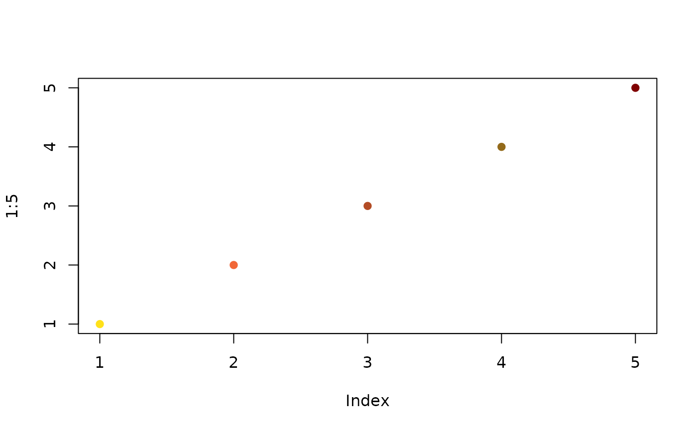
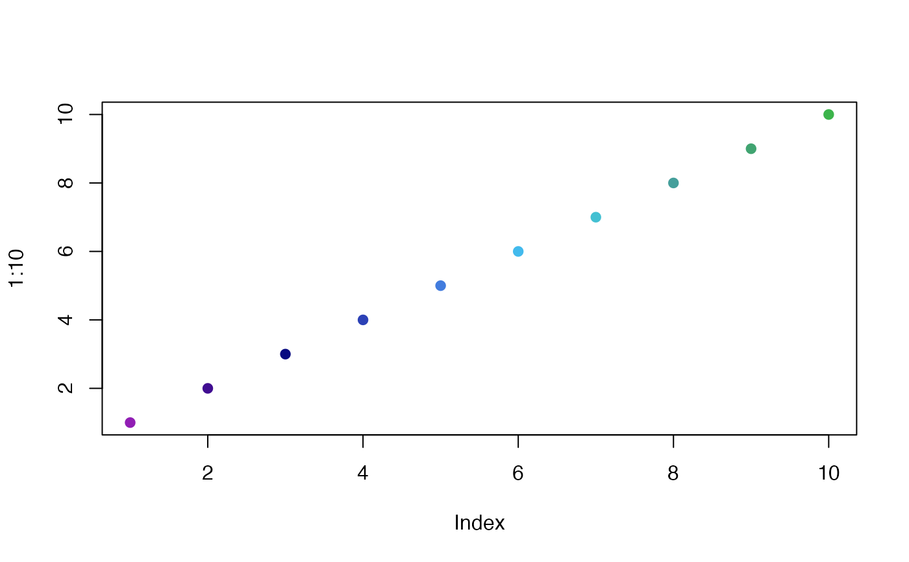
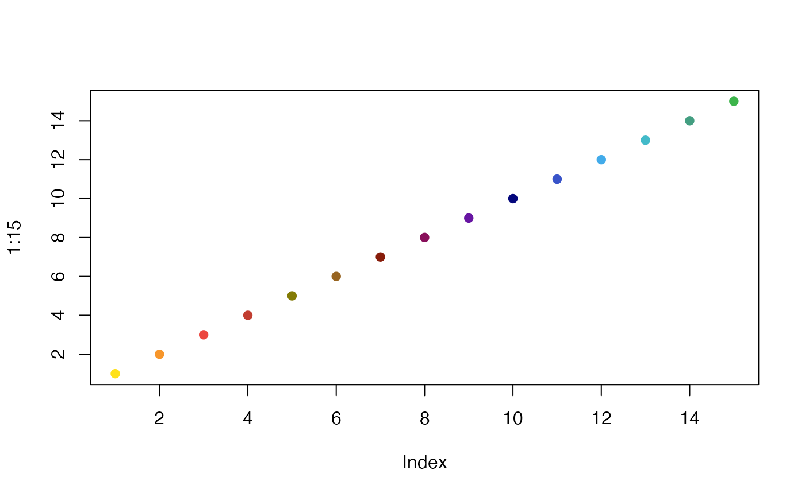

Provides a set of color palettes designed for use with MAPpoly, a package for genetic mapping in polyploids. These palettes are intended to enhance the visual representation of genetic data.
mp_pallet1(n)The available palettes are:
mp_pallet1A palette with warm colors ranging from yellow to dark red and brown.
mp_pallet2A palette with cool colors, including purples, blues, and green.
mp_pallet3A comprehensive palette that combines colors from both mp_pallet1 and mp_pallet2, offering a broad range of colors.
Each palette function returns a function that can generate color vectors of variable length, suitable for mapping or plotting functions in R.
# Generate a palette of 5 colors from mp_pallet1
pal1 <- mp_pallet1(5)
plot(1:5, pch=19, col=pal1)

# Generate a palette of 10 colors from mp_pallet2
pal2 <- mp_pallet2(10)
plot(1:10, pch=19, col=pal2)

# Generate a palette of 15 colors from mp_pallet3
pal3 <- mp_pallet3(15)
plot(1:15, pch=19, col=pal3)
